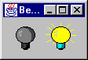

46.2 Entwurf einer einfachen Bean
Wir wollen uns in diesem Abschnitt mit dem Entwurf einer einfachen
Bean beschäftigen. Dazu werden wir eine Klasse LightBulb
entwerfen, die eine kleine Glühlampe grafisch darstellt. Sie
kann wahlweise an- oder ausgeschaltet werden. Diese Klasse wird alle
notwendigen Eigenschaften einer Bean aufweisen und kann im GUI-Designer
und im laufenden Programm verwendet werden.
46.2.1 Grundsätzliche Architektur
Da wir eine GUI-Komponente realisieren wollen, folgen wir analog der
in Kapitel 33 beschriebenen
Vorgehensweise und leiten unsere Klasse LightBulb
aus der Klasse Canvas
des Pakets java.awt
ab. Um die Eigenschaft der Serialisierbarkeit zu erfüllen, implementiert
die Klasse das Interface Serializable.
Der Anschaltzustand wird in der Instanzvariablen lighton
festgehalten:
001 import java.awt.*;
002 import java.io.*;
003
004 public class LightBulb
005 extends Canvas
006 implements Serializable
007 {
008 protected boolean lighton;
009 transient protected Image offimage;
010 transient protected Image onimage;
011 ...
012 }
|
Listing 46.1: Deklaration der Klasse LightBulb
46.2.2 Grafische Darstellung
Die grafische Darstellung der Glühbirne soll durch das Anzeigen
von Bitmaps erfolgen, die bei der Instanzierung aus zwei gif-Dateien
bulb1.gif und bulb2.gif
geladen werden. Abhängig vom Zustand der Variable lighton
wird in der überlagerten paint-Methode
jeweils eine der beiden Bitmaps angezeigt. Das Verfahren entspricht
im Wesentlichen dem in Abschnitt 34.1.2
beschriebenen. Auch die Methoden getPreferredSize
und getMinimumSize
werden überlagert, damit die Komponente einem eventuell vorhandenen
Layoutmanager die gewünschte Größe (in diesem Fall
40 mal 40 Pixel) mitteilen kann.
Etwas anders als bisher beschrieben arbeitet die Routine zum Laden
der Bilddateien. Damit die Bilddatei auch gefunden wird, wenn die
Klasse aus einer .jar-Datei geladen wurde
(das ist beispielsweise beim Laden von serialisierten Beans oder beim
Import in einen GUI-Designer der Fall), kann nicht einfach der Dateiname
an createImage
bzw. getImage
übergeben werden. Stattdessen konstruieren wir mit Hilfe des
Klassenobjekts unserer Bean und dessen Methode getResource
ein URL-Objekt,
das wir an createImage übergeben
können:
001 private Image getImageResource(String name)
002 {
003 Image img = null;
004 try {
005 java.net.URL url = getClass().getResource(name);
006 img = getToolkit().createImage(url);
007 MediaTracker mt = new MediaTracker(this);
008 mt.addImage(img, 0);
009 try {
010 //Warten, bis das Image vollständig geladen ist,
011 mt.waitForAll();
012 } catch (InterruptedException e) {
013 //nothing
014 }
015 } catch (Exception e) {
016 System.err.println(e.toString());
017 }
018 return img;
019 }
|
Listing 46.2: Laden einer Image-Ressource
Diese Vorgehensweise basiert darauf, dass jede geladene Klasse ihren
Classloader (also das Objekt, das für
das Laden der Klasse verantwortlich war) kennt und an diesen Aufrufe
zum Laden von Ressourcen delegieren kann. Der beim Laden eines Objekts
aus einer .jar-Datei verwendete Classloader
unterscheidet sich dabei sehr wohl von dem Bootstrap Loader,
der System- und Anwendungsklassen aus .class-Dateien
lädt. Diese Unterscheidung wird in dem von getResource
gelieferten URL gekapselt und vom AWT-Toolkit beim Aufruf von createImage
aufgelöst.
46.2.3 Eigenschaften
Wie im einleitenden Abschnitt dargelegt, sind Eigenschaften
ein wesentliches Designmerkmal von Beans. Eine Eigenschaft ist eigentlich
nur eine Membervariable, die über öffentliche Methoden gelesen
und geschrieben werden kann. Eine Bean kann beliebig viele Eigenschaften
haben, jede von ihnen besitzt einen Namen und einen Datentyp. Die
Bean-Designkonventionen schreiben vor, dass auf eine Eigenschaft mit
dem Namen name und dem Datentyp typ über folgende
Methoden zugegriffen werden soll:
public typ getName();
public void setName(typ newValue);
|
Unsere Beispiel-Bean hat eine einzige Eigenschaft lightOn vom
Typ boolean. Ihre getter-/setter-Methoden
haben demnach folgende Signatur (der erste Buchstabe des Eigenschaftsnamens
wird großgeschrieben, da er hinter dem »get« bzw.
»set« steht):
public boolean getLightOn();
public void setLightOn(boolean newvalue);
Auf diese Weise können getter- und setter-Methoden für alle
primitiven Datentypen geschrieben werden. Der GUI-Designer erkennt
Eigenschaftennamen und -typen anhand der Signaturen und stellt automatisch
einen passenden Editor dafür zur Verfügung.
Objekte als Eigenschaften
Neben primitiven Typen ist auch die Übergabe von Objekttypen
erlaubt. Die Signaturkonventionen entsprechen genau denen von primitiven
Typen. Bei Objekteigenschaften kann allerdings nicht unbedingt davon
ausgegangen werden, dass der GUI-Designer einen geeigneten Editor
zur Verfügung stellen kann. Zwar besitzt der GUI-Designer für
die häufig benötigten Objekttypen Color
und Font standardmäßig
geeignete Editoren. Bei einem selbst definierten Objekttyp ist das
natürlich nicht der Fall. Hier muss der Entwickler nötigenfalls
selbst einen Editor entwickeln und dem Designer zur Verfügung
stellen. Wir werden in Abschnitt 46.6.2
zeigen, wie das gemacht wird.
Indizierte Eigenschaften
Anstelle eines Einzelwerts kann eine Eigenschaft auch durch ein Array
von Werten repräsentiert werden. Sie wird in diesem Fall als
indizierte Eigenschaft bezeichnet.
Die getter-/setter-Methoden sehen dann so aus:
public typ getName(int index);
public void setName(int index, typ newValue);
|
Es werden also keine Arrays übergeben, sondern die Methoden erwarten
jeweils den Index der gewünschten Eigenschaft als zusätzliches
Argument. Für das Einhalten der Array-Grenzen ist der Aufrufer
selbst verantwortlich. Ist die Array-Größe variabel, könnte
die Bean sie in einer zweiten Eigenschaft festhalten und über
eigene getter-/setter-Methoden verfügbar machen.
46.2.4 Implementierung
Nach diesen Vorbemerkungen ist die Implementierung der Bean zur Darstellung
der Glühbirne keine große Hürde mehr:
001 /* LightBulb.java */
002
003 import java.awt.*;
004 import java.io.*;
005
006 public class LightBulb
007 extends Canvas
008 implements Serializable
009 {
010 //Instanzvariablen
011 protected boolean lighton;
012 transient protected Image offimage;
013 transient protected Image onimage;
014
015 //Methoden
016 public LightBulb()
017 {
018 lighton = false;
019 initTransientState();
020 }
021
022 //Getter/Setter Licht an/aus
023 public void setLightOn(boolean on)
024 {
025 if (on != this.lighton) {
026 this.lighton = on;
027 repaint();
028 }
029 }
030
031 public boolean getLightOn()
032 {
033 return this.lighton;
034 }
035
036 public void toggleLight()
037 {
038 setLightOn(!getLightOn());
039 }
040
041 //Implementierung der Oberfläche
042 public void paint(Graphics g)
043 {
044 int width = getSize().width;
045 int height = getSize().height;
046 int xpos = 0;
047 if (width > 40) {
048 xpos = (width - 40) / 2;
049 }
050 int ypos = 0;
051 if (height > 40) {
052 ypos = (height - 40) / 2;
053 }
054 g.drawImage(
055 (this.lighton ? onimage : offimage),
056 xpos,
057 ypos,
058 this
059 );
060 }
061
062 public Dimension getPreferredSize()
063 {
064 return new Dimension(40, 40);
065 }
066
067 public Dimension getMinimumSize()
068 {
069 return new Dimension(40, 40);
070 }
071
072 //Private Methoden
073 private void initTransientState()
074 {
075 offimage = getImageResource("bulb1.gif");
076 onimage = getImageResource("bulb2.gif");
077 }
078
079 private void readObject(ObjectInputStream stream)
080 throws IOException, ClassNotFoundException
081 {
082 stream.defaultReadObject();
083 initTransientState();
084 }
085
086 private Image getImageResource(String name)
087 {
088 Image img = null;
089 try {
090 java.net.URL url = getClass().getResource(name);
091 img = getToolkit().createImage(url);
092 } catch (Exception e) {
093 System.err.println(e.toString());
094 }
095 return img;
096 }
097 }
|
LightBulb.java |
Listing 46.3: Die Bean zur Anzeige einer Glühbirne
Der Konstruktor initialisiert zunächst die Zustandsvariable lighton
und ruft dann die Methode initTransientState
auf, um die beiden gif-Dateien zu laden. Durch Aufruf von setLightOn
kann die Beleuchtung wahlweise an- oder ausgeschaltet werden; getLightOn
liefert den aktuellen Zustand. In paint
wird - abhängig vom aktuellen Zustand - jeweils eines der beiden
Images ausgegeben. Die Umrechnungsroutinen dienen dazu, die Images
zentriert auszugeben, wenn mehr Platz als nötig zur Verfügung
steht.
46.2.5 Verwendung der Bean
Zum Abschluss wollen wir uns ansehen, wie die erstellte Bean in ein
einfaches Programm eingebunden werden kann. Dazu bedienen wir uns
exakt der Techniken, die bereits in den Kapiteln 31
bis 34 beschrieben
wurden. Tatsächlich unterscheidet sich die Verwendung einer selbst
entwickelten Bean nicht vom Einbinden einer vordefinierten Komponente.
001 /* Listing4604.java */
002
003 import java.awt.*;
004 import java.awt.event.*;
005
006 public class Listing4604
007 extends Frame
008 {
009 public Listing4604()
010 {
011 super("Bean einbinden");
012 setLayout(new FlowLayout());
013 setBackground(Color.lightGray);
014 LightBulb bulb1 = new LightBulb();
015 bulb1.setLightOn(false);
016 add(bulb1);
017 LightBulb bulb2 = new LightBulb();
018 bulb2.setLightOn(true);
019 add(bulb2);
020 addWindowListener(
021 new WindowAdapter() {
022 public void windowClosing(WindowEvent event)
023 {
024 System.exit(0);
025 }
026 }
027 );
028 }
029
030 public static void main(String[] args)
031 {
032 Listing4604 frm = new Listing4604();
033 frm.setLocation(100, 100);
034 frm.pack();
035 frm.setVisible(true);
036 }
037 }
|
Listing4604.java |
Listing 46.4: Einbinden einer einfachen Bean
Die Ausgabe des Programms sieht wie folgt aus:

Abbildung 46.1: Die Glühlampen-Bean